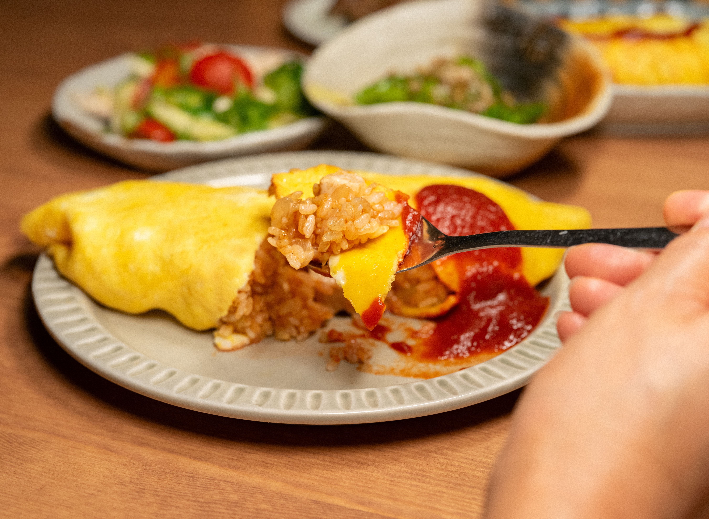

Home
Omurice (Japanese omelette udon)

Ingredients for Omurice
- Boneless, skinless chicken thigh
- Onion
- Green peas
- Japanese short-grain rice
- Kagome Ketchup
- Worcestershire sauce
- Salt and black pepper
- Butter
For the Omelette
How to Make Omurice
- Cook the chicken rice
- Beat and strain the eggs
- Cook the omelette
- Fill and fold
- Flip, shape, and serve